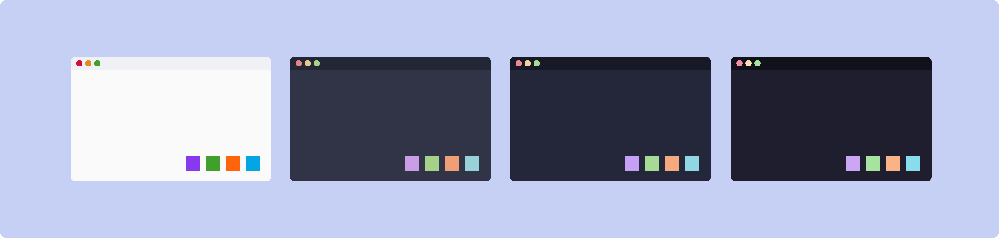

Catppuccin
- Catppuccin — soothing pastel palette family for terminals, editors, and desktop tooling; upstream coordination lives in the catppuccin GitHub organization and the palette specification

[1]Flavors
- Catppuccin/Latte — light
- Catppuccin/Frappe — dark, softer contrast
- Catppuccin/Macchiato — dark, medium contrast
- Catppuccin/Mocha — dark, strongest contrast (common default in examples)
Palette reference
- Canonical colors and naming: catppuccin/palette and Style guide — prefer linking here over duplicating hex tables in the garden unless you are tracking local overrides
- Port directory: github.com/catppuccin/catppuccin — ports
Stack matrix (how to wire it)
- Ghostty — built-in themes; set
theme = "catppuccin-<flavor>"(e.g. Catppuccin/Mocha →catppuccin-mocha) in Ghostty config orprograms.ghostty.settingsin Nix/home-manager — see Ghostty - nvim — main port catppuccin/nvim; enable colorscheme
catppuccinand setflavourtolatte/frappe/macchiato/mochain plugin setup (see each Catppuccin/Latte … Catppuccin/Mocha for the keyword) - tmux — common pattern: via TPM; set flavour variable (e.g.
@catppuccin_flavour) to match the flavor name — detail on tmux/Config or oh-my-tmux as you maintain it - yazi — use a Catppuccin flavor pack (e.g. catppuccin/yazi) or equivalent
theme/ flavor configuration inyazi.tomlper upstream instructions
- Ghostty — built-in themes; set
Other terminals in this garden
Footnotes